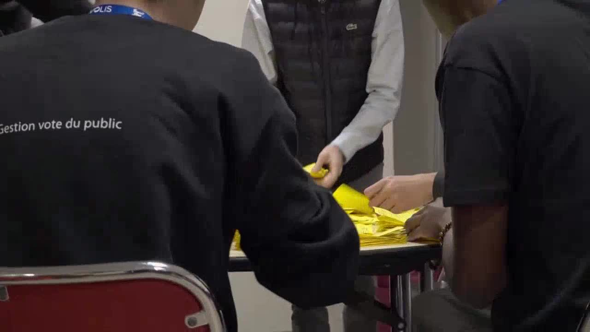

Réalisation Audiovisuelle & Montage
Du reportage au Festival Premiers Plans d'Angers aux réels verticaux pour Capfun Lila, en passant par les matchs de handball du SCO Angers. 11 productions de bout en bout : cadrage, son, montage.
 Direction Artistique & Web
Direction Artistique & Web
Graphisme, Presse & Développement Web
Identité visuelle, affiches événementielles, +40 articles signés pour Ouest-France et France Bleu, et plateformes web codées en PHP/SQL.
 Terrain & Responsabilités
Terrain & Responsabilités
Expériences de Terrain & Missions Clés
Community Manager au Capfun Lila, cadreur direct pour la FFVolley, journaliste radio-web chez France Bleu et communication Handisport.
 Master 2 UCO Angers
Master 2 UCO Angers
Formations & Cursus Universitaire
5 années d'études à l'UCO d'Angers : Licence Information & Communication puis Master Communication Numérique & Conception Multimédia.
 Profil
Profil
Qui suis-je ? — Profil, pratiques & outils
Sony α7 III, DaVinci Resolve, 6 ans de football en club, joueur d'échecs en compétition et voyageur dans 5 pays. Un profil entier.
 Photographie
Photographie
Série Photo — Saison Capfun Lila
15 clichés captés lors de la saison estivale 2024. Lumières naturelles, textures d'eau, instants de vie sans mise en scène.